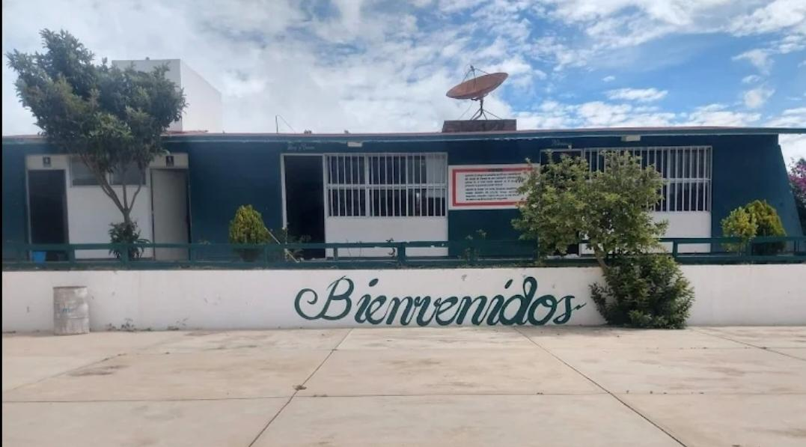

El Centro de Educación Media Superior a Distancia (EMSaD) número 45 de San Pablo Tijaltepec es una institución educativa destacada en la región Mixteca de Oaxaca, perteneciente al Colegio de Estudios Científicos y Tecnológicos del Estado de Oaxaca (CECyTEO). El Colegio fue fundado el 15 de octubre del 2003, su creación fue impulsada por las autoridades municipales, siendo presidente municipal durante el trienio 2002-2004 el señor Catarino García Silva, el primer director del centro fue Ernesto López Saynes, seguidos Edith Valdivieso Jiménez, Daniel Hernández Ortiz, Luís Rosales Rodríguez y Cosme Cruz Jiménez.
Con el paso del tiempo, el Colegio creció y actualmente cuenta con varios salones adicionales a su estructura inicial. Está ubicado en domicilio conocido en San Pablo Tijaltepec, Tlaxiaco, Oaxaca, el centro ha ofrecido capacitación para el trabajo.
En Octubre de 2023, la comunidad educativa celebró su 20 aniversario con una gala cultural, destacando su labor de dos décadas en la formación de juventudes en la región, a lo largo de su historia, siendo su director actualmente el Licenciado José Luis Morales Martínez.

Ofrecer a la población oaxaqueña educación media superior, en las modalidades de bachillerato, que permita a los alumnos, la continuidad de sus estudios a nivel superior; asi como el adecuado desempeño de sus egresados en la vida profesional.
Convertir al CECyTEO en una institución educativa de calidad en el nivel medio superior en el estado y proyectar su presencia a nivel nacional.